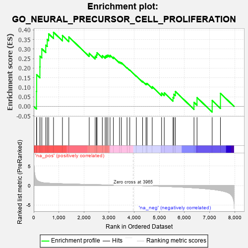
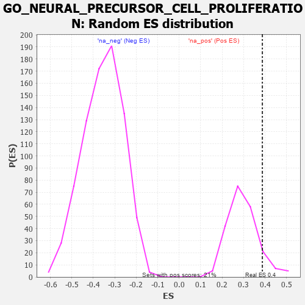

| | | Dataset | 7d |
| Phenotype | NoPhenotypeAvailable |
| Upregulated in class | na_pos |
| GeneSet | GO_NEURAL_PRECURSOR_CELL_PROLIFERATION |
| Enrichment Score (ES) | 0.3874446 |
| Normalized Enrichment Score (NES) | 1.3054775 |
| Nominal p-value | 0.10798122 |
| FDR q-value | 0.4058706 |
| FWER p-Value | 1.0 |
Table: GSEA Results Summary

Fig 1: Enrichment plot: GO_NEURAL_PRECURSOR_CELL_PROLIFERATION
Profile of the Running ES Score & Positions of GeneSet Members on the Rank Ordered List
| PROBE | GENE SYMBOL | GENE_TITLE | RANK IN GENE LIST | RANK METRIC SCORE | RUNNING ES | CORE ENRICHMENT | | 1 | DISP3 | | | 110 | 1.525 | 0.0783 | Yes |
| 2 | EMX2 | | | 117 | 1.451 | 0.1653 | Yes |
| 3 | CIP2A | | | 246 | 0.945 | 0.2063 | Yes |
| 4 | INSM1 | | | 250 | 0.939 | 0.2627 | Yes |
| 5 | ARX | | | 322 | 0.782 | 0.3010 | Yes |
| 6 | ORC3 | | | 479 | 0.644 | 0.3203 | Yes |
| 7 | PSMG1 | | | 538 | 0.615 | 0.3501 | Yes |
| 8 | PITX3 | | | 594 | 0.596 | 0.3793 | Yes |
| 9 | RERE | | | 787 | 0.536 | 0.3874 | Yes |
| 10 | EMX1 | | | 1143 | 0.455 | 0.3702 | No |
| 11 | DOCK7 | | | 1398 | 0.410 | 0.3630 | No |
| 12 | OTP | | | 2209 | 0.275 | 0.2775 | No |
| 13 | KDM1A | | | 2447 | 0.237 | 0.2620 | No |
| 14 | MELK | | | 2499 | 0.227 | 0.2692 | No |
| 15 | NUMB | | | 2519 | 0.224 | 0.2804 | No |
| 16 | RORA | | | 2730 | 0.193 | 0.2656 | No |
| 17 | NR2E1 | | | 2844 | 0.177 | 0.2621 | No |
| 18 | FGFR2 | | | 2895 | 0.167 | 0.2659 | No |
| 19 | RAB10 | | | 2952 | 0.157 | 0.2683 | No |
| 20 | LEF1 | | | 3037 | 0.144 | 0.2665 | No |
| 21 | PAX6 | | | 3170 | 0.127 | 0.2575 | No |
| 22 | KIF1A | | | 3415 | 0.088 | 0.2321 | No |
| 23 | GLI1 | | | 3489 | 0.079 | 0.2276 | No |
| 24 | NF1 | | | 3713 | 0.040 | 0.2019 | No |
| 25 | WDR47 | | | 3823 | 0.023 | 0.1896 | No |
| 26 | WNT2 | | | 4084 | -0.021 | 0.1581 | No |
| 27 | LHX5 | | | 4332 | -0.066 | 0.1309 | No |
| 28 | LRRK2 | | | 4467 | -0.087 | 0.1193 | No |
| 29 | ILK | | | 4510 | -0.096 | 0.1198 | No |
| 30 | LHX2 | | | 4716 | -0.143 | 0.1026 | No |
| 31 | DRD2 | | | 5088 | -0.221 | 0.0693 | No |
| 32 | SMO | | | 5195 | -0.247 | 0.0708 | No |
| 33 | FGFR1 | | | 5543 | -0.332 | 0.0471 | No |
| 34 | NDE1 | | | 5578 | -0.339 | 0.0633 | No |
| 35 | ASPM | | | 5637 | -0.358 | 0.0776 | No |
| 36 | CDON | | | 6378 | -0.607 | 0.0211 | No |
| 37 | PTBP2 | | | 6499 | -0.661 | 0.0459 | No |
| 38 | RYK | | | 7102 | -1.000 | 0.0305 | No |
| 39 | LHX1 | | | 7431 | -1.305 | 0.0681 | No |
Table: GSEA details [plain text format]

Fig 2: GO_NEURAL_PRECURSOR_CELL_PROLIFERATION: Random ES distribution
Gene set null distribution of ES for GO_NEURAL_PRECURSOR_CELL_PROLIFERATION